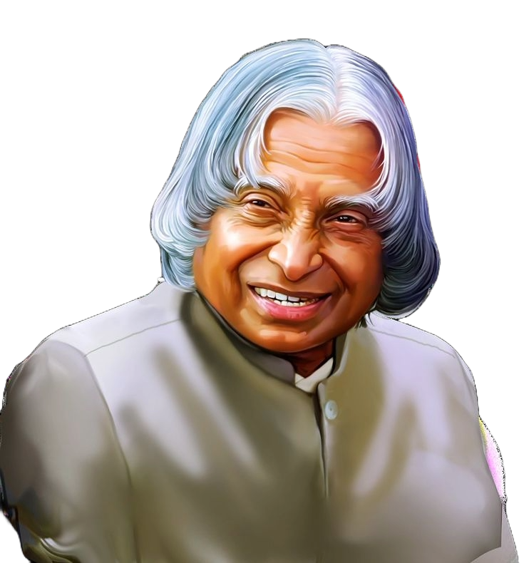

1931-2015
"If you want to shine like a sun, first burn like a sun"
Avul Pakir Jainulabdeen Abdul Kalam BR ( 15 October 1931 – 27 July 2015) was an Indian aerospace scientist and statesman who served as the 11th president of India from 2002 to 2007. Born and raised in a Muslim family in Rameswaram, Tamil Nadu, he studied physics and aerospace engineering. He spent the next four decades as a scientist and science administrator, mainly at the Defence Research and Development Organisation (DRDO) and Indian Space Research Organisation (ISRO) and was intimately involved in India's civilian space programme and military missile development efforts.[1] He thus came to be known as the Missile Man of India for his work on the development of ballistic missile and launch vehicle technology.[2][3][4] He also played a pivotal organisational, technical, and political role in India's Pokhran-II nuclear tests in 1998, the first since the original nuclear test by India in 1974